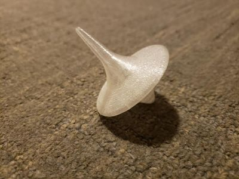

In this rotation we used the 3D Printer to practice additive design.
We used various types of software including Meshmixer and Makerbot to create our designs.
We 3D printed an object with our head on it using a body scanner. The hallow object was one that could
not be created by subtractive manufacturing, so I printed a hallow designed cube with additive manufacturing on the 3D Printer.
Also, we needed to create an useful object. I 3D printed a spinning top.
